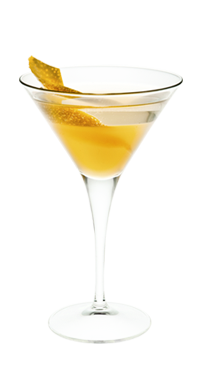

Северное сияние — Проси, что хочешь!
Свечение верхних слоев атмосферы — северное сияние — чаще можно наблюдать весной и осенью…
Легенда коктейля
Свечение верхних слоев атмосферы — северное сияние — чаще можно наблюдать весной и осенью.
Говорят, именно поэтому живущие на северном полюсе Дед Мороз, Санта Клаус и Йоулупукки неохотно выезжают из дома в это время года. К счастью, уже придуман коктейль, на время превращающий спутника в доброго волшебника, который дарит подарки за «хорошее поведение».
- Как приготовить:
-
- Положи в стакан для смешивания верхушку веточки розмарина и подави мадлером
- Положи мед 1 ст/ложку и налей мандариновую водку 40 мл
- Наполни стакан кубиками льда и размешай коктейльной ложкой
- Перелей через стрейнер в охлажденный коктейльный бокал
- Используя коктейльную ложку, уложи слой игристого сухого вина 100 мл
- Укрась лимонной цедрой